World Vision Australia
Donor Journey Optimisation
Redesigned donor journeys using behavioural segmentation to improve conversion speed, channel effectiveness, and fundraising efficiency.

Business Context
World Vision Australia’s Bounceback campaign is designed to re-engage inactive supporters and encourage renewed giving. However, the current journey applies a fixed communication structure to all donors regardless of campaign type, response timing, channel preference, or value contribution.
Problem Statement
This one-size-fits-all approach creates delayed donations, unnecessary touchpoints, and inefficient channel use. It also increases the risk of supporter fatigue and misses opportunities to accelerate giving from quick responders and protect high-value donors.
Objective
Identify behavioural differences across Bounceback campaigns and use those insights to recommend a more effective donor journey that improves time-to-donation, channel sequencing, engagement efficiency, and fundraising outcomes.
Approach
- Time-to-donation segmentation
- Channel responsiveness analysis
- Donor value segmentation
- Engagement decay analysis
1. Engagement & Journey Efficiency
Figure 1. Total Journeys and Engagement Rate % by Touchpoint and Campaign
Engagement is front-loaded, with the strongest response at Touch 1 and a clear drop as touchpoints increase. This suggests that the current journey extends too many supporters into low-efficiency stages.
2. Time-to-Donation Analysis
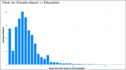
Figure 2. Time to Donate (Days) – Education
Education shows an early-or-never pattern, where a small group converts quickly but many supporters fail to donate within the journey window.
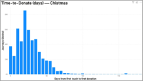
Figure 3. Time to Donate (Days) – Christmas
Christmas donors convert more gradually, with a longer tail and stronger representation in the 31–60 day range.
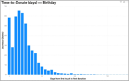
Figure 4. Time to Donate (Days) – Birthday
Birthday converts fastest, with donations concentrated in the earliest stage of the journey.
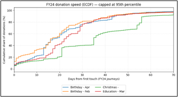
Figure 5. FY24 Donation Speed (ECDF)
This visual compares how quickly donors convert across campaigns and highlights Birthday as the fastest-converting family.
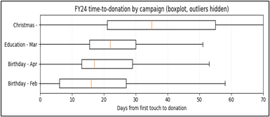
Figure 6. FY24 Time-to-Donation by Campaign
The time distributions confirm that donor timing behaviour differs substantially between Birthday, Christmas, and Education campaigns.
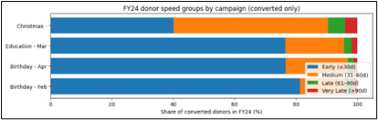
Figure 7. FY24 Donor Speed Groups by Campaign
Birthday is dominated by early donors, Christmas has a more gradual response profile, and Education is more polarised between quick converters and non-converters.
3. Channel Responsiveness
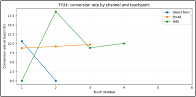
Figure 8. FY24 Conversion Rate by Channel and Touchpoint
Direct Mail dominates early conversion at Touch 1, SMS peaks at Touch 2 as a reminder channel, and Email contributes more gradually through later touches.
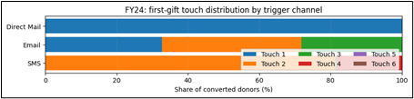
Figure 9. First Gift Touch Distribution by Trigger Channel
This confirms the timing role of each channel: Direct Mail acts as a fast trigger, SMS as a follow-up nudge, and Email as a slower nurture channel.
4. Donor Value Analysis
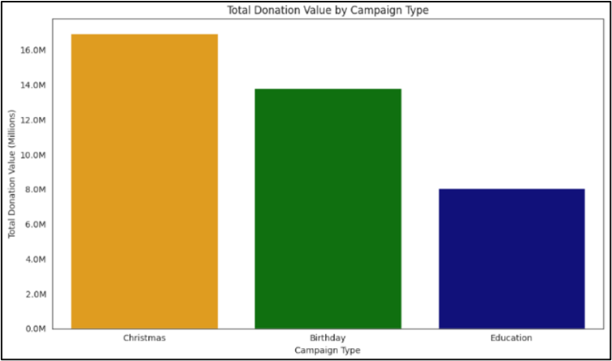
Figure 10. Total Donation Value by Campaign Type
Christmas generates the highest total value, Birthday follows closely, and Education contributes the least overall.
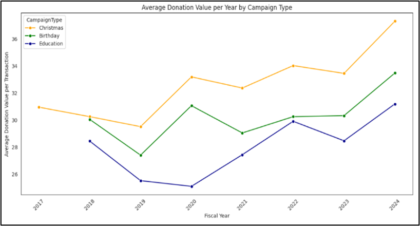
Figure 11. Average Donation Value per Year by Campaign Type
Christmas also leads on average donation value, while Birthday remains stable and Education underperforms.
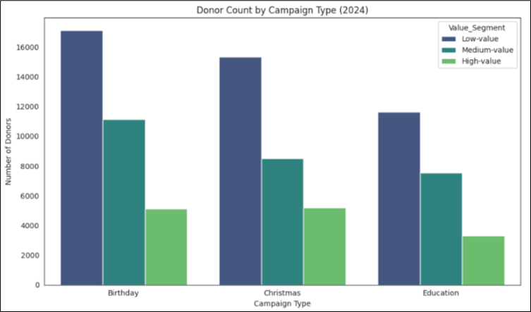
Figure 12. Donor Count by Campaign Type (2024)
This shows the supporter distribution across campaign types and gives context for where volume sits relative to value.
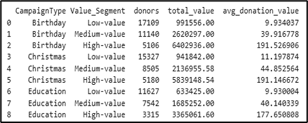
Figure 13. Value Segment by Campaign Type
Within each campaign, donor value is highly skewed. High-value donors are fewer in number but contribute disproportionately to revenue.
5. Engagement Decay Analysis
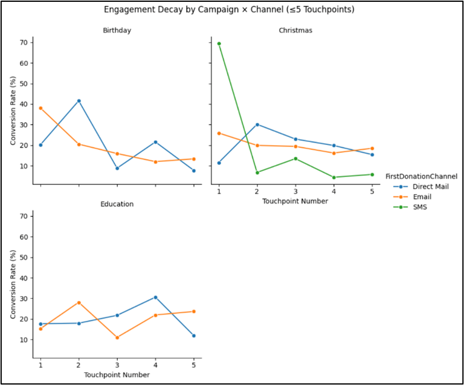
Figure 14. Engagement Decay by Campaign and Channel
Decay patterns differ across campaign families, showing that engagement does not fall at the same rate for every donor group.
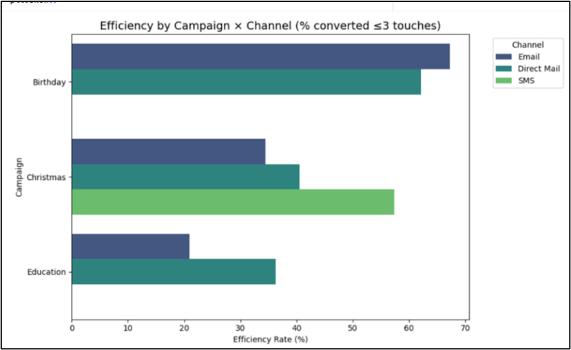
Figure 15. Efficiency by Campaign and Channel
Efficiency is strongest within the early touches, especially for Birthday and Christmas, while Education remains flatter and weaker overall.
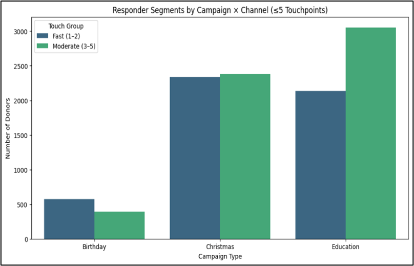
Figure 16. Responder Segments by Campaign and Channel
Different responder patterns appear by campaign and channel, reinforcing the need for a segmented rather than uniform journey design.
Key Findings
- Timing varies by campaign: Birthday converts fastest, Christmas converts more gradually, and Education follows an early-or-never pattern.
- Channels operate at different speeds: Direct Mail works best early, SMS performs well as a reminder, and Email supports longer nurture journeys.
- Value is concentrated: Christmas drives the highest value, and high-value donors are a small but financially important segment.
- Engagement decay differs across campaigns: this confirms that a single fixed journey is inefficient.
Recommendations
- Optimise channel sequencing by campaign type and donor segment.
- Front-load fast-response channels for Birthday and short-cycle segments.
- Use a longer nurture structure for Christmas where value remains strong.
- Launch a donor value segmentation dashboard to classify supporters into High / Medium / Low value bands and align sequence logic accordingly.
Business Impact
This solution can reduce unnecessary touchpoints, accelerate time-to-donation, improve channel efficiency, and support more personalised supporter engagement while maintaining or increasing donation value.
Tools Used
Power BI, DAX, Excel, Data Modelling, Diagnostic Analytics